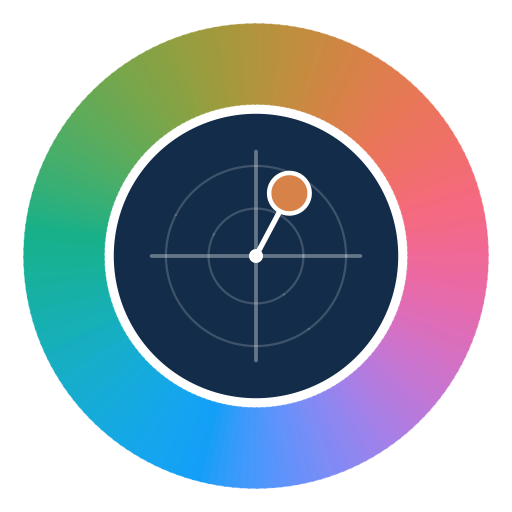

Croma: enxergue as cores CIELAB e CIELCH
O colorímetro devolve três números por leitura. O Croma transforma esses números em cor visível, junta as repetições, calcula a diferença de cor (ΔE) e monta um relatório em PDF.
Os números do colorímetro, em poucas linhas
Cor de fruto, de polpa, de folha, de grão ou de alimento processado costuma ser medida no espaço CIELAB, com três coordenadas:
- L*: luminosidade, de 0 (preto) a 100 (branco).
- a*: do verde (negativo) ao vermelho (positivo).
- b*: do azul (negativo) ao amarelo (positivo).
O mesmo ponto pode ser descrito em CIELCH, que muitas vezes é mais fácil de interpretar: L* continua igual, C* (croma) é a distância ao centro do plano a* × b*, ou seja, quão saturada é a cor, e h° (ângulo de matiz) diz para que lado ela aponta: 0° vermelho, 90° amarelo, 180° verde, 270° azul.
As contas são: C* = √(a*² + b*²) e h° = atan2(b*, a*), em graus. Para a manga,
√(18,3² + 34,7²) = 39,2. O Croma faz essa conversão nos dois sentidos, então você pode digitar no sistema
que o seu equipamento entrega.
Como usar
- Escolha o sistema de cor na aba Editar dados: CIELAB (L*, a*, b*) ou CIELCH (L*, C*, h°).
- Lance as amostras linha a linha, com Adicionar linha, ou vá em Importar dados e cole as colunas copiadas do Excel. Vírgula decimal é aceita; marque se a primeira linha é cabeçalho e se os dados importados substituem ou se somam aos que já estão lá.
- Veja as cores nas abas de resultado, que atualizam em tempo real: Paleta (cartões com a cor e os valores de cada amostra), Gráficos (plano a* × b* e L* × C*), Diferença de cor (ΔE) e Repetições.
- Escolha uma referência para a diferença de cor, por exemplo a testemunha ou o fruto no dia da colheita. Ela aparece com um anel escuro nos gráficos.
- Agrupe as repetições, se tiver, e escolha se o valor do grupo é a média ou a mediana.
- Gere o relatório: título, responsável (opcional), descrição do experimento e as seções que entram no PDF (gráficos, paleta, tabela de coordenadas, ΔE e repetições). O arquivo sai em A4 paisagem.
Formato para colar
Uma amostra por linha, colunas separadas por tabulação (é o que o Excel copia):
| Amostra | L* | a* | b* |
|---|---|---|---|
| Manga A R1 | 62,4 | 18,3 | 34,7 |
| Manga A R2 | … | … | … |
Grupo antes da amostra (Manga A | R1 | 62,4 | 18,3 | 34,7). No modo CIELCH, as duas últimas colunas são C* e h°.Repetições: média, homogeneidade e leituras suspeitas
Cor varia dentro do mesmo fruto e entre frutos do mesmo tratamento, por isso se fazem várias leituras.
O Croma reconhece as repetições pelo nome: Manga A R1, Manga A R2 e
Manga A R3 viram o grupo Manga A (também dá para exigir nome exatamente igual
ou usar a coluna Grupo).
- Valor do grupo: média ou mediana de cada coordenada, com desvio-padrão. A mediana é menos afetada por uma leitura ruim.
- Homogeneidade: a distância média (ΔE₀₀) de cada repetição até o centro do grupo. Quanto menor, mais parecidas as leituras.
- Repetição atípica: o app marca a leitura cuja distância ao centro passa de 2,5 vezes a distância mediana do grupo (e de 1,5). É um aviso para conferir, não para apagar: pode ser uma mancha, um reflexo, o sensor mal apoiado, ou variação real.
Se a cor for variável resposta de um experimento, as médias por parcela é que vão para a ANOVA, como qualquer outra variável. O guia sobre repetição de verdade explica por que várias leituras do mesmo fruto não são repetições do tratamento.
Diferença de cor: ΔE*ab ou ΔE₀₀?
Em relação à referência, o Croma calcula ΔL*, Δa*, Δb*, ΔC*, ΔH*, o ΔE*ab clássico (distância simples entre os dois pontos no espaço L*a*b*) e o ΔE₀₀ (CIEDE2000). O ΔE*ab é fácil de calcular, mas trata igual diferenças que o olho percebe de forma diferente. O CIEDE2000 corrige isso com pesos para luminosidade, croma e matiz, e é a fórmula mais usada hoje para dizer se duas cores são visualmente distintas.
| ΔE₀₀ | Classificação no Croma |
|---|---|
| menor que 1 | Imperceptível |
| 1 a 2 | Muito pequena |
| 2 a 3,5 | Pequena |
| 3,5 a 5 | Perceptível |
| maior que 5 | Grande |
Os componentes ajudam a explicar como a cor mudou: ΔL* negativo é escurecimento, ΔC* negativo é perda de saturação (cor mais "apagada") e ΔH* é mudança de tonalidade.
Dúvidas comuns
A cor na tela é exatamente a cor da amostra?
É uma aproximação: o app converte para sRGB (iluminante D65, observador 2°), o padrão das telas. Algumas cores muito saturadas ficam fora do que um monitor consegue mostrar (fora do gamut sRGB); o app avisa e ajusta só a exibição, sem mudar os números. A tela também depende da calibração do seu monitor.
Meu equipamento usou outro iluminante. Tem problema?
Os cálculos de C*, h° e ΔE usam os números como vieram. Só a cor exibida pressupõe D65. Informe no relatório o iluminante e o observador configurados no colorímetro.
Os dados ficam salvos?
Não. Tudo fica na sessão aberta do navegador e é descartado ao fechar a página. Baixe o PDF antes de sair.
Como cito o Croma?
O código é aberto (licença MIT) e o repositório no GitHub tem o arquivo de citação, com o botão "Cite this repository".